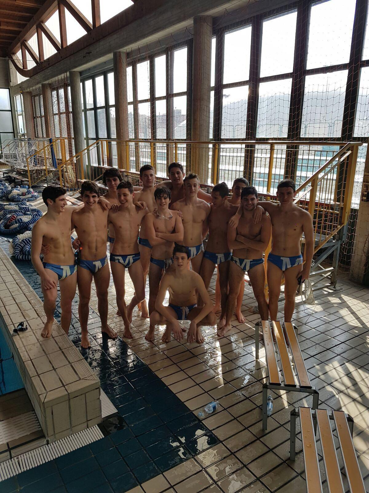
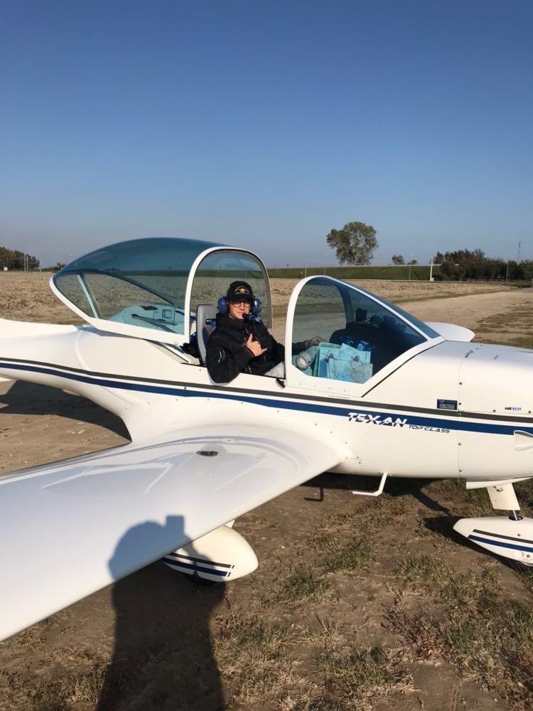
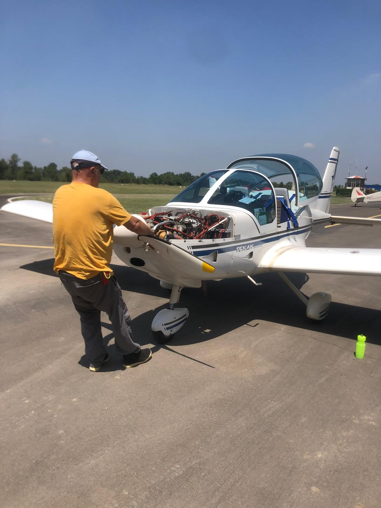
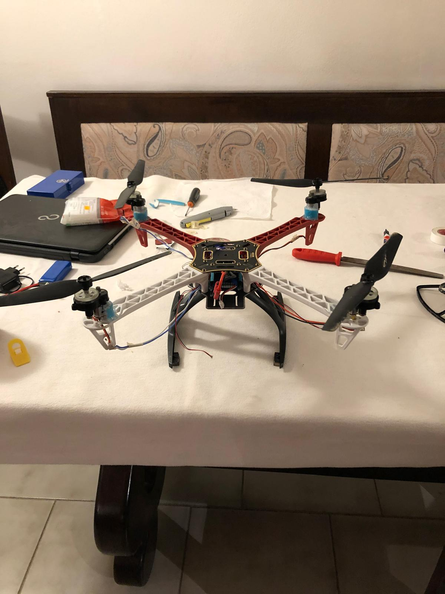
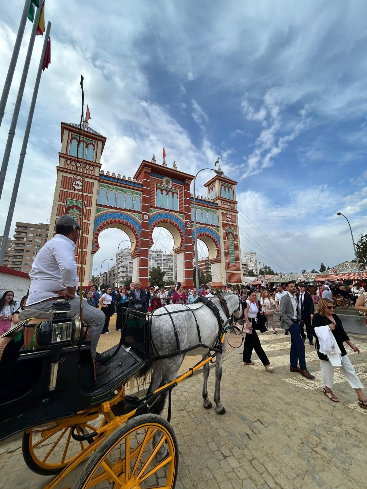
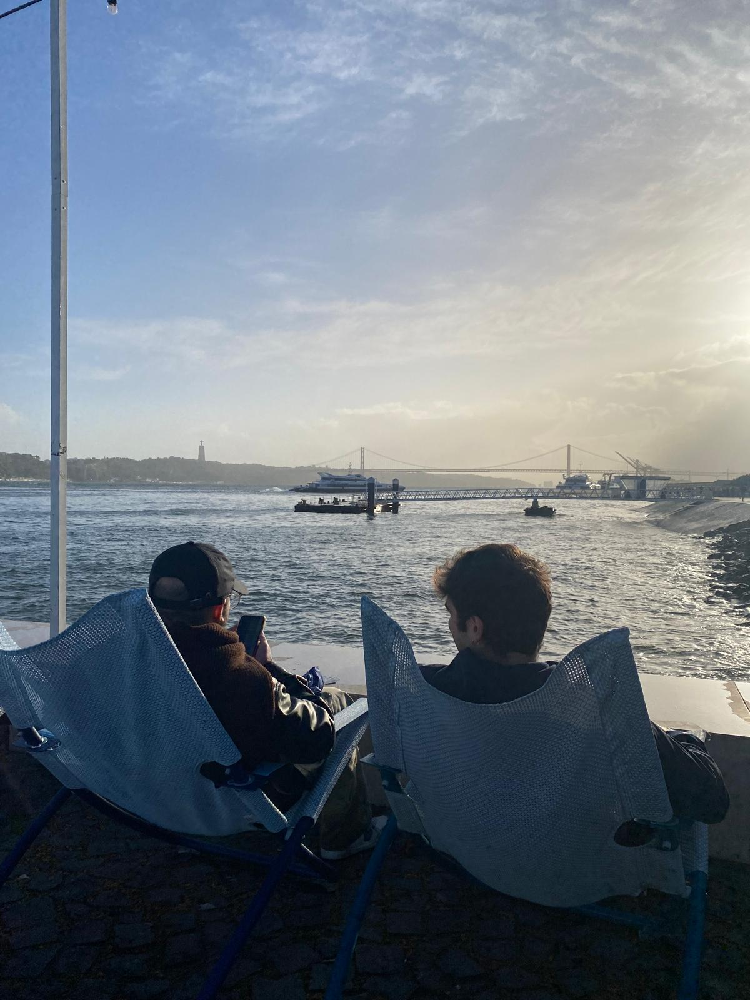

Under 17 — nationals season
I grew up playing sport. Swimming and skiing were the first — agonistic, structured, repetitive in the best sense. But the thing that really shaped me was water polo, which I started towards the end of middle school almost by chance. I ended up playing for years, moving between categories from Under 13 to the first team in Serie B, competing at national level at Under 15, and captaining the Under 17 side. I spent an enormous amount of time in pools, on coaches to away games, in changing rooms with people older than me trying to figure out where I fit. I learned a lot about how teams actually work — not from a textbook, but from being in one.
In my fourth year of high school I quit. Not because anything went wrong — I just felt like I had spent my entire life with my schedule pre-arranged by training, and I wanted to know what it was like to have a weekend that belonged to me. So I stopped, and I started learning the piano instead. I gave myself one target: play Yann Tiersen's Comptine d'un autre été at the Christmas concert, six months away. I got there. It's still how I approach most things — I need a concrete goal, not a vague intention.

First time in the cockpit
My father flies ultralight aircraft. I grew up around small airfields, watching him prepare for flights, eventually sitting next to him in the cockpit. Long before I could explain what lift was, I already knew I was fascinated by it. We also had a real engine failure once — an unplanned landing in a field that my father handled with complete calm. I remember watching him work through it and thinking there was something remarkable about that kind of preparation. I did not decide to study aerospace that day, but the memory stayed.

Engine failure — emergency field landing
Alongside flying, I also spent a lot of time on the water. Sailing trips with my father from when I was young gave me a relationship with the sea that has never really left. I got my Advanced scuba certification early and did many dives — there is a particular quality of attention that the sea demands, whether you are on it or under it, that I find hard to find anywhere else.

First prototype — living room floor, 2020
The last months of high school happened online, at home, during the COVID lockdown. I filled the time by building a drone from scratch — not a kit, but individual components sourced with the help of a local hobby shop whose staff sold me second-hand parts and answered every question I had. It took weeks of failed attempts and burnt electronics before it lifted off the ground for the first time. I brought the whole project to my high school final exam, presenting the physics of brushless motors, and flew the drone outside the school building on the day of the exam. It was the first time engineering felt genuinely mine.
In the second year of my Master's I spent six months in Seville as part of the Erasmus programme. Academically I took courses in Heat Transfer and Aircraft Trajectory Optimization. But what I remember most is arriving in a city I did not know, in a language I could manage but not master, and finding — surprisingly quickly — that I felt at ease. I went to the Feria de Abril, watched the sun go down over the Guadalquivir more times than I can count, and made friends I have since visited in Poland, Portugal, and Germany.


When I came back, Seville had changed something in me — not dramatically, but in the way that matters. I was more comfortable with uncertainty, more willing to show up somewhere new without knowing anyone, more curious about the people I had not yet met. I have visited 22 countries in total. Not to collect them, but because moving around, adjusting, figuring out unfamiliar places with unfamiliar people — it suits me.
At 17 I worked as a lifeguard at a campsite in Jesolo — my first experience of real responsibility away from home. During university I poured beers at San Siro stadium on match nights, serving 70,000 people in a few frantic hours, and worked as a waiter at a Milan club called Gattopardo. None of these have anything to do with aerodynamics. But they gave me something that years of university could not: the experience of work that is physically demanding, socially intense, and unforgiving when you make a mistake. I took these jobs because I wanted them, not because I had to. And I came back to engineering each time with a slightly clearer sense of why I had chosen it.
Where things standI am finishing my Master's thesis on Flettner rotors and will be done in October 2026. I am looking for roles in aerodynamics, CFD, wind energy or R&D — in Italy or elsewhere in Europe. If you have made it this far and something here resonates, I would be glad to hear from you.